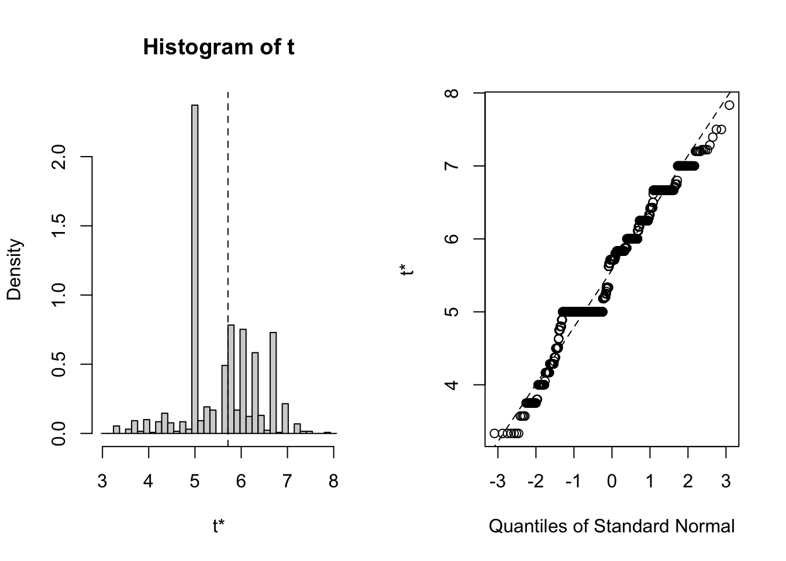

第 10 章 Bootstrap
x<-rnorm(25,30,5)
B<-1000 # number of bootstrap samples to obtain
xbar<-rep(0,B)
for( i in 1:B ){
xbs<-sample(x,length(x),replace=TRUE)
xbar[i]<-mean(xbs)
}
se.xbar<-sd(xbar)
se.xbar## [1] 0.9852612tcv<-qt(0.975,length(x)-1)
mean(x)+c(-1,1)*tcv*se.xbar## [1] 27.13872 31.20568mean(x)+c(-1,1)*tcv*sd(x)/sqrt(length(x))## [1] 27.14718 31.1972110.1 Percentile Bootstrap Confidence Intervals
quantile(xbar,probs=c(0.025,0.975),type=1)## 2.5% 97.5%
## 27.30193 31.12055m<-0.025*1000
sort(xbar)[c(m,B-m)]## [1] 27.30193 31.12055library("boot")
bsxbar<-boot(x,function(x,indices) mean(x[indices]), B)
boot.ci(bsxbar)## Warning in boot.ci(bsxbar): bootstrap variances needed for studentized intervals## BOOTSTRAP CONFIDENCE INTERVAL CALCULATIONS
## Based on 1000 bootstrap replicates
##
## CALL :
## boot.ci(boot.out = bsxbar)
##
## Intervals :
## Level Normal Basic
## 95% (27.27, 30.97 ) (27.26, 30.95 )
##
## Level Percentile BCa
## 95% (27.39, 31.08 ) (27.40, 31.11 )
## Calculations and Intervals on Original Scalequantile(bsxbar$t,probs=c(0.025,0.975),type=1)## 2.5% 97.5%
## 27.39038 31.0797910.2 Bootstrap Tests of Hypotheses
10.2.1 Nursery School Intervention
school<-c(82,69,73,43,58,56,76,65)
home<-c(63,42,74,37,51,43,80,62)
d <- school - home
dpm<-c(d,-d)
n<-length(d)
B<-5000
dbs<-matrix(sample(dpm,n*B,replace=TRUE),ncol=n)
wilcox.teststat<-function(x) wilcox.test(x)$statistic
bs.teststat<-apply(dbs,1,wilcox.teststat)
mean(bs.teststat>=wilcox.teststat(d))
#[1] 0.023810.2.2 Bootstrap test for sample mean
x<-rnorm(25,1.5,1)
thetahat<-mean(x)
x0<-x-thetahat+1 #theta0 is 1
mean(x0) # notice H0 is true## [1] 1B<-5000
xbar<-rep(0,B)
for( i in 1:B ) {
xbs<-sample(x0,length(x),replace=TRUE)
xbar[i]<-mean(xbs)
}
mean(xbar>=thetahat)## [1] 0library(Rfit)
boot.rfit<-function(data,indices){
data<-data[indices,]
fit<-rfit(weight~height,data=data,tau='N')
coefficients(fit)[2]
}
bb.boot<-boot(data=baseball,statistic=boot.rfit,R=1000)
bb.boot##
## ORDINARY NONPARAMETRIC BOOTSTRAP
##
##
## Call:
## boot(data = baseball, statistic = boot.rfit, R = 1000)
##
##
## Bootstrap Statistics :
## original bias std. error
## t1* 5.714286 -0.1409288 0.7837038plot(bb.boot)
boot.ci(bb.boot,type='perc',index=1)## BOOTSTRAP CONFIDENCE INTERVAL CALCULATIONS
## Based on 1000 bootstrap replicates
##
## CALL :
## boot.ci(boot.out = bb.boot, type = "perc", index = 1)
##
## Intervals :
## Level Percentile
## 95% ( 3.805, 7.000 )
## Calculations and Intervals on Original Scale